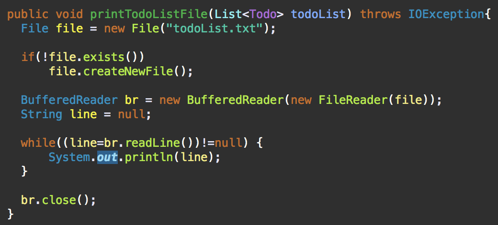

<!doctype html>
<html>
    <head>
        <meta charset="UTF-8">
        <meta name = "viewport" content = "width = device-width, initial-scale=1.0">
        <title>TodoList Customizing</title>
        <link rel="stylesheet" type="text/css" href="../../css/pages.css">
    </head>
</html>

<body>
    <header>
        <h3><a href = "../../index.html">HAGUS <br> HARDWARE</a></h3> 
        <ul id="main_menu">
        </ul>

        <script src = "../../MainMenu.js"></script>
    </header>

    <section class="section">
    <div id = "tag_menu">
    </div>

    <script src = "../../TIL_tag_menu.js"></script>

    <div id = "tag_list">
        <div class="l_title"><a href = "../../TIL.html">Study.</a></div><hr>
        <div class = "l_subtitle"><div class = "title"><a href = "../../TIL.html"><strong>[Java]TodoList Customizing</div><div id="date">2021.07.04</div></strong></a></div>
             <!--====content====-->
        <div class = "content">
        <br>    
<pre>
<code>
    <strong>[목표]</strong>

    1. 참조 기능 삭제 (잘 쓰지 않는 기능)

    2. 수정된 시간을 지우고 마감일을 추가 (사용자가 할 일 추가 시, 마감일 까지 입력하도록 함)
        2-1. 마감일 <strong>알림 기능</strong> (원래 계획은 하루 전날 알림, 현재 까지는 당일 알림까지 구현)

    3. 파일 입출력을 통한 할 일 관리 (할 일들을 파일에 쓰고 읽어옴, 아직 미완성)

</code>

<span class="h">1. 참조 기능 삭제</span>

<strong>[삭제 & 변경 목록]</strong>

Todo.java  :  parents, getParents()
TodoRepository.java  :  findAllChildren(),findAll()(변경)
TodoMenuParameter.java  :  getParentIds()
TodoFinishProcessor.java : 참조된 아이디를 찾아서 조건 달고 비교하는 기능 삭제


<hr>
<span class="h">2. 마감일 추가 && 알림기능</span>

Todo.java에서 dueDate인스턴스 생성. getDueDate()함수 생성
사용자로 부터 마감일을 입력하도록 한다. 

원래는 마감일 대신에 수정된 시간이 출력되었다. 

IOHelper.java에 아래 코드 추가


코드 추가 후 TodoListConsole.java에서 start() 메서드를 실행할 때 불러왔다. 
아래는 출력화면이다. 


<hr>
<span class="h">3. 파일 입출력을 통한 할 일 관리</span>

<strong>[ Test ]</strong>

파일 입출력이 잘 되는지 테스트 해보았다.
IOHelper.java


<code>
- 일단 file을 열기. 절대 경로로 지정하지 않는다면 현재 프로젝트 디렉토리에 파일을 연다.
- 만약 열려는 파일이 없다면 새로 생성합니다.
- 버퍼단위의 입출력을 담당하고 있는 BufferedReader, BufferedWriter (라인 단위로 파일을 읽고 쓴다) 

</code>

파일에 저장하는 코드. TodoRepository.java에서 구현


구현하다보니 여기저기 고쳐야 할 부분들이 많이 보였다. 코드가 깔끔하지 못하고 난잡한 부분들이 보여서 더 간단한 방법을 모색중이다. 


</pre>

    <br>
    <br>
    <br>
    </div> 

    </div>

    

</section>

    
</body>


